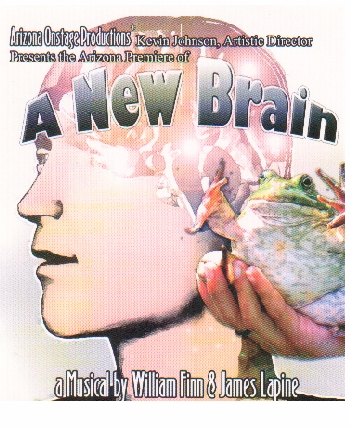

Kevin Johnson, Artistic Director
A NEW BRAINBy William Finn & James Lapine
(Falsettos and the new Broadway hit The 25th Annual Putnam County Spelling Bee)JUNE 9-26, 2005
Pima West Campus Center for the Arts Black Box Theatre
2202 W. Anklam Road, Tucson, AZ
"Many laughs and tears are found in this lovely, and ultimately uplifting, show."

In 1992 composer William Finn was the toast of Broadway as his hit musical Falsettos had just won two Tony Awards. Two months later he was diagnosed with an inoperable brain tumor. A New Brain is his response: affectionately satiric jabs at hospital politics, lovers, mothers and medical procedures. A New Brain presents a witty and delightfully tuneful look at the life of an artist. It is a musical journey through the mind of Gordon Michael Schwinn -- a man who is about to have dangerous brain surgery. Along the way, the audience meets singing frogs, MRI machines that turn into sailboats and a mother smart enough to wear black to hide the fat. A New Brain is William Finn's semi-autobiographical story. The premise is that of a frustrated composer who is stricken with a brain disorder. He faces the possibility of his own mortality with (or despite) the help of his friends, family and the hospital staff. A New Brain has an orchestra of 12 instruments and a running time of 90 minutes.Carol Calkins directed the cast of ten that included:
Walter Belcher
John Brownlee
Betty Craig
Ben Crawford
Tony Diaz
Jessica Dorman
Kenton Jones
Diane Thomas
Joey Topmiller
Shayna VercilloMusical Direction was by Chris Wingert
Choreography was by Stacy Johnson
Lighting Design was by Eric Michael
Tucson Weekly, June 16, 2005
Surgical Precision
By James Reel
Not long into Arizona Onstage Productions' opening-night performance of A New Brain last weekend came a moment to induce shivers. A tight little band backed up nine performers on a smartly lit stage; the lyrics were witty and intelligent; the music was solid; each of the expert singing actors had already created a clearly defined character, and everyone shared an obvious joy of performance that nevertheless didn't break down into in mere showbiz glitz.
It was one of those moments in which everything worked perfectly together, the show's performers and creators and audience effortlessly locking into sync, making us fall in love with the theater as if for the first time.
Even so, William Finn's A New Brain may not quite be the best thing Arizona Onstage Productions has done. The company launched itself two years ago with another Finn show, Falsettoland, with a more coherent storyline and closer connections among all the characters. Yet A New Brain brings out the best in a company that has yet to make a misstep.
Finn wrote the music and lyrics and collaborated with James Lapine on the book inspired by an alarming episode in Finn's own life. In A New Brain, we meet a composer named Gordon who is stuck writing songs for a kiddie show starring one Mr. Bungee, an irascible man in a frog suit. If Gordon thinks he's miserable now, things are about to get worse: One day, he collapses face-down into his lunch and is diagnosed with a brain ailment. Surgery could cure him, or it could kill him.
Gordon has plenty of intimates who rally to his support: his mother, Mimi, who is determinedly cheerful around her son while secretly fearing the worst; his lover, Roger, who struggles to draw closer to Gordon, even as Gordon in his despondency gently pushes him away; and his friend and agent, Rhoda, a no-nonsense force of life.
We meet the medical team, a somewhat arrogant doctor and two nurses (one "thin," the other "nice"). There's also a minister, whose main job is to sing harmony; a homeless woman who cadges change outside Gordon's apartment; and Mr. Bungee, whose hallucinatory appearances alternately torment Gordon and motivate him to pull through.
Since a fair amount of the show takes place in Gordon's disrupted mind, Finn and Lapine may be forgiven for delivering a not-entirely coherent story; some of the scenes seem too much like filler and diversion, although in the end, they do support the show's themes, which revolve around the need for hope and the importance of what the homeless woman is always demanding: change.
Recent University of Arizona graduate Ben Crawford is terrific as Gordon; he's a fine singer and actor both, effortlessly conveying Gordon's self-pity without turning whiny. This may be the first time Crawford has been able to smile onstage without menace; he's played John Wilkes Booth in Assassins, Riff-Raff in Rocky Horror, Billy Bigelow in Carousel, Audrey II in Little Shop of Horrors, Jud in Oklahoma--you get the idea. Gordon is the most complex and real character Crawford has yet played, and Crawford slips into the role with comfort and ease.
Walter Belcher is equally fine as Roger, instantly establishing what seems like a longstanding affectionate rapport with Crawford's Gordon and, as always, proving to be one of Tucson's most likeable all-around entertainers. Betty Craig is outstanding as Mimi, Gordon's mother who is both classy and Jewish, with all that those two words imply when connected to the word "mother." Craig's defining moment comes late in her first solo, when she oh-so-briefly reveals the anguish hidden behind her determinedly cheerful admonitions to Gordon. It's hard to do this without seeming to flip an emotional light switch, but Craig accomplishes it with subtlety and precision.
You can continue down the cast list and find much to praise and nothing to scold in each player, including Jessica Dorman's lively and encouraging Rhoda, and especially Diane Thomas as the bag lady, who has a standout number late in the show and who never, ever slips into caricature.
And that's the key to these performances guided by the sure hand of Carol Calkins: no histrionics, no showbiz artificiality, just many-shaded emotions that always seem true.
Chris Wingert leads a fine, well-balanced band that plays almost without stop through the 95-minute show. K.D. Jones' sets are a bit more elaborate than in this company's earlier productions, but still display the versatility of simplicity, and work in fine partnership with Erik Michael's lighting design, carefully keyed to the shifting tone and emotion of each number.
A New Brain is yet another triumph for Arizona Onstage Productions. It's an intricate, perfectly calibrated show that will surprise people who believe that musical theater isn't brain surgery.
Copyright Tucson Weekly